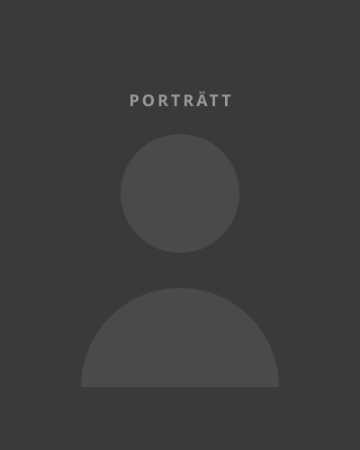
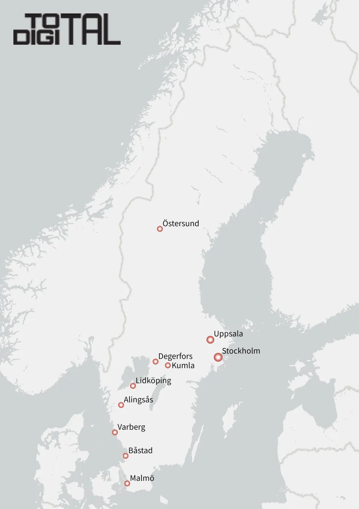

OM OSS
Vi är Total Digital
Lilla företagets smidighet. Stora företagets styrka. Det är Total Digital.
Teknik möter domänkunskap. Vi kombinerar ledande plattformar med djup domänkunskap och ny teknik för att lösa komplexa utmaningar – från nya perspektiv.
Vi gillar långsiktiga relationer, höga ambitioner och människor som kan sitt område. Engagemang och kompetens? Det har vi svart bälte i.
HISTORIA
Vägen hit
PLATSHÅLLARE. Här står en rad om hur bolaget vuxit – vem som startade det, vad som fick det att röra sig, och var vi är nu.
-
2016
Platshållare: bolaget grundas
En eller två rader om starten. Vilka som var med, vad idén var, och vad den första uppdragsgivaren behövde.
-
2018
Platshållare: första större kunden
En eller två rader om det uppdrag som gjorde att bolaget kunde börja växa.
-
2021
Platshållare: Maximo möter ArcGIS
En eller två rader om när de två plattformarna började byggas ihop, och vad det öppnade upp.
-
2023
Platshållare: fjärranalys och AI
En eller två rader om steget ut i satellitdata och maskininlärning.
-
2026
Platshållare: tio orter, ett distansbolag
En eller två rader om var bolaget står idag.
LEDNINGSGRUPP
Vi som håller ihop det
PLATSHÅLLARE. En rad om ledningsgruppen – vad den gör och varför den ser ut som den gör.

VAR VI FINNS
Tio orter, inget huvudkontor
PLATSHÅLLARE. En rad om att vi arbetar på distans, och vad det betyder för hur vi tar uppdrag.

PLATSHÅLLARE. Vi är ett distansbolag. Ingen av oss sitter på ett huvudkontor, och det är ett val snarare än en följd – det låter oss hitta rätt kompetens där den finns i stället för där kontoret ligger. Bolagets säte är Lidköping.
- Östersund
- Uppsala
- Stockholm
- Degerfors
- Kumla
- Lidköping
- Alingsås
- Varberg
- Båstad
- Malmö
KARRIÄR
Vi har inga utlagda tjänster
PLATSHÅLLARE. En rad om att vi hellre pratar med rätt person än utgår från en annons.
PLATSHÅLLARE. Här står vad det innebär att arbeta hos oss: vilka uppdrag man hamnar i, hur ett litet bolag med stora kunder fungerar i praktiken, och vad vi förväntar oss av den som kommer in. Vi annonserar sällan – när vi hittar någon som kan sitt område hittar vi oftast också ett uppdrag.
PLATSHÅLLARE. En rad om hur en spontanansökan bäst ser ut, och vad som händer efter att den kommit in.
Känner du att du hör hemma hos oss? Hör av dig, även om vi inte söker just nu.
SKICKA EN SPONTANANSÖKANEXAMENSARBETE
Vi tar emot examensarbetare
PLATSHÅLLARE. En rad om vad ett examensarbete hos oss ser ut som, och när man bör höra av sig.
PLATSHÅLLARE. Här står hur vi handleder, vad vi kan erbjuda i form av data, plattformar och tid, och vilken typ av frågeställningar som passar oss. Ett examensarbete hos oss ligger i skärningen mellan tillgångsförvaltning, GIS, fjärranalys och AI.
PLATSHÅLLARE. En rad om vilka lärosäten vi samarbetat med och hur processen brukar gå till.
- Platshållare: titel på examensarbetet
- Platshållare: titel på examensarbetet
- Platshållare: titel på examensarbetet
- Platshållare: titel på examensarbetet
Har du en idé till ett examensarbete, eller vill du höra vilka uppslag vi har liggande?
HÖR AV DIG OM EXAMENSARBETE